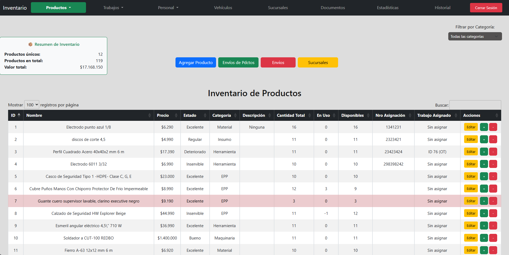

Explora algunas vistas previas de la aplicación en funcionamiento
GymManager es una plataforma integral para la gestión de gimnasios que centraliza y optimiza todas las operaciones internas. Permite administrar el inventario de productos, gestionar clientes y sus matrículas, así como registrar información personal y pagos mensuales. El sistema ofrece control completo de asistencia con opciones para marcar y desmarcar entradas, generar estadísticas como días de mayor concurrencia, tasas de inscripción, renovación mensual y asistencia diaria.
Incluye además un generador de clases para que los usuarios puedan inscribirse a sesiones específicas del gimnasio, y un panel de avisos con integración de imágenes, videos (TikTok, Reels, YouTube) y texto informativo. GymManager también cuenta con recordatorios automáticos para cobros de mensualidades, rutinas semanales personalizadas con imágenes, videos y detalles de ejercicios, además de un panel de acceso exclusivo para usuarios/clientes adaptado a móviles.
Desde su sesión, cada cliente puede revisar sus datos personales, historial de asistencias, rutinas asignadas y los avisos más recientes del gimnasio. También incorpora la identidad visual del gimnasio, con logos y vínculos a redes sociales, ofreciendo así una experiencia digital moderna, eficiente y centrada en el usuario.
Además, personalizamos GymManager de acuerdo a tus necesidades específicas. Si hay funciones que no utilizas o deseas eliminar, podemos quitarlas. Si necesitas nuevas herramientas o ajustes a medida, las desarrollamos para ti. Nuestro enfoque es que tengas un sistema adaptado 100% a tu forma de trabajar, sin complicaciones innecesarias y con mejoras continuas según tus objetivos.
Nuestra prioridad es ayudarte a profesionalizar y optimizar tu gimnasio. Con GymManager, podrás ofrecer una experiencia moderna, conectada y organizada tanto para tu equipo como para tus clientes.
Al personalizar la plataforma con tu logo, colores, redes sociales y estilo de marca, tu gimnasio proyectará una imagen más sólida, moderna y confiable. Esto no solo mejora tu reputación, sino que también fortalece el vínculo con tus clientes al brindarles acceso directo a su información, asistencia, rutinas y notificaciones desde cualquier dispositivo.
Además, la aplicación es totalmente adaptable a las necesidades particulares de cada gimnasio. Ya sea que necesites más control sobre los pagos, asistencia, rutinas o comunicación con clientes, GymManager se ajusta para que gestiones todo desde un solo lugar. Nuestro objetivo es que destaques y que tu gimnasio tenga mayor prestigio, eficiencia y conectividad.